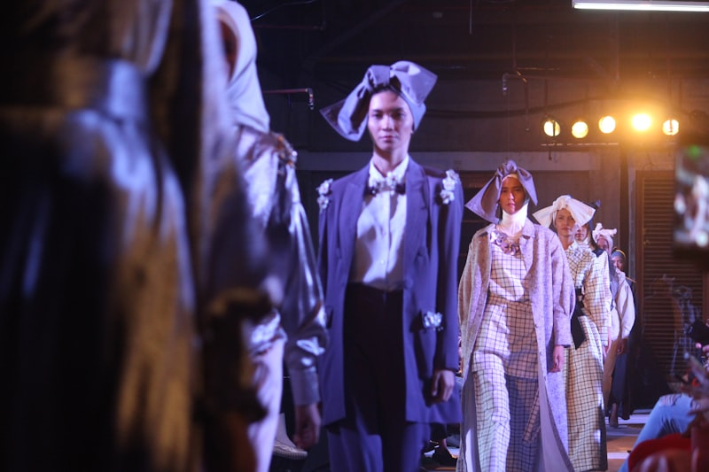
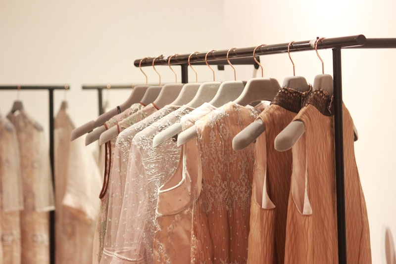
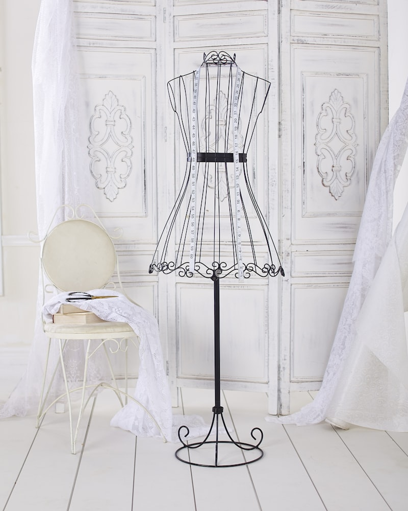
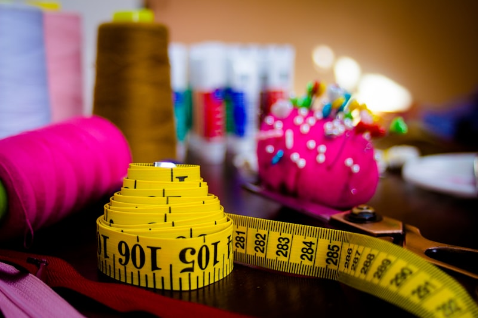

My Approach
에이전시·스튜디오에 기여하는 방식
짧은 기한·다양한 클라이언트·빈번한 피드백이 일상인 환경에서, 팀과 프로젝트에 이렇게 기여합니다.
-
브리프 이해
클라이언트의 목표, 타깃, 예산·일정을 먼저 정리하고 디자인 방향을 명확히 제안합니다.
-
협업
기획·영업·생산·그래픽 등 내부 팀과 원활한 커뮤니케이션 및 수정 요청에 신속히 대응합니다.
-
산출물 품질
스케치, 작업 도식, 스펙·컬러·원단 시트를 바로 공유·검토 가능한 형태로 정리합니다.
에이전시가 클라이언트에게 전달하는 신뢰감 있는 결과물을 함께 만드는 파트너가 되고자 합니다.
- 10+ 년 의상 디자인 실무
- 다수 국내외 유명 브랜드 협업
- 전 과정 기획부터 양산 협업까지
Experience
주요 경험 및 성과
다양한 브랜드와 프로젝트를 거치며, 요구사항·일정·예산 조건에 맞춰 디자인 방향을 조율하는 경험을 쌓았습니다.
-

시즌·연간 컬렉션
국내외 유명 브랜드에서 시즌·연간 컬렉션 및 상품 라인 디자인 참여
-

브랜드 아이덴티티
가이드에 맞춘 톤앤매너·실루엣·컬러·디테일 개발
-

기획 · 도식
트렌드 리서치 기반 기획안 제안 및 스케치·도식·스펙 시트 작성
-

샘플 · 품질
원단·부자재 선정, 샘플 피드백 및 수정 지시를 통한 품질 관리
이미지: Unsplash (무료 라이선스)
Career
경력 요약
지난 10년간 의상 디자이너로서 시즌 기획부터 스케치, 도식, 원·부자재 선정, 샘플 피드백, 양산 단계 협업까지 전 과정에 참여해 왔습니다.
초기에는 라인 단위 디자인 보조와 도식·스펙 정리를 맡으며 기초를 다졌고, 이후 시즌 컬렉션 기획·라인 개발·핵심 아이템 디자인까지 역할 범위를 넓혔습니다. 기획·MD·생산·품질 관리·그래픽 등 유관 부서와의 협업을 통해 납기와 품질을 지키면서도 디자인 의도가 유지되는 결과물을 만드는 데 익숙합니다.
원가·생산성·납기를 고려한 디자인 조정 및 대체안 제시, 신규 라인·카테고리 확장 시 콘셉트 정리와 키 룩·코디 제안 경험도 있습니다.
지원 동기 및 포부
다양한 클라이언트와 프로젝트를 오가며 시야를 넓히는 환경에서, 디자인 역량과 협업 방식을 더 단단히 다져 가고 싶습니다.
한 브랜드에 오래 머무르며 깊이를 쌓는 경험도 의미 있었지만, 저는 최근 다양한 클라이언트와 프로젝트를 오가며 시야를 넓히는 환경에 더 큰 성장 가능성을 느끼고 있습니다.
디자인 에이전시·스튜디오에서는 브리프 해석부터 납품까지의 프로세스가 빠르게 반복됩니다. 앞으로도 트렌드와 실무의 균형을 유지하면서, 팀과 클라이언트 모두에게 만족스러운 결과를 내는 디자이너로 일하고 싶습니다.
연락하기
귀사(스튜디오)의 프로젝트와 팀 문화에 제 경험이 보탬이 될 수 있기를 바랍니다. 포트폴리오와 경력 상세는 아래로 요청해 주시면 성실히 공유드리겠습니다.
FAQ
자주 묻는 질문
전문 분야는 무엇인가요?
데일리·캐주얼·컨템포러리 의류 라인을 중심으로 시즌 기획, 라인 개발, 스케치·도식, 원·부자재 선정, 샘플 피드백까지 담당해 왔습니다.
협업 시 강점은 무엇인가요?
브리프 정리와 명확한 디자인 제안, 유관 부서와의 커뮤니케이션, 마일스톤에 맞춘 중간 공유로 재작업을 줄이는 것을 강점으로 합니다. 일정 준수와 적응력도 중요하게 생각합니다.
포트폴리오는 어떻게 받을 수 있나요?
연락처로 요청해 주시면 프로젝트 성격에 맞게 선별한 포트폴리오와 경력 상세를 공유드립니다.
에이전시·스튜디오 환경에 적합한가요?
다양한 클라이언트와 짧은 일정, 빈번한 피드백이 있는 환경에 익숙하며, 브랜드·카테고리·무드가 바뀌는 프로젝트에도 빠르게 톤을 맞춥니다.